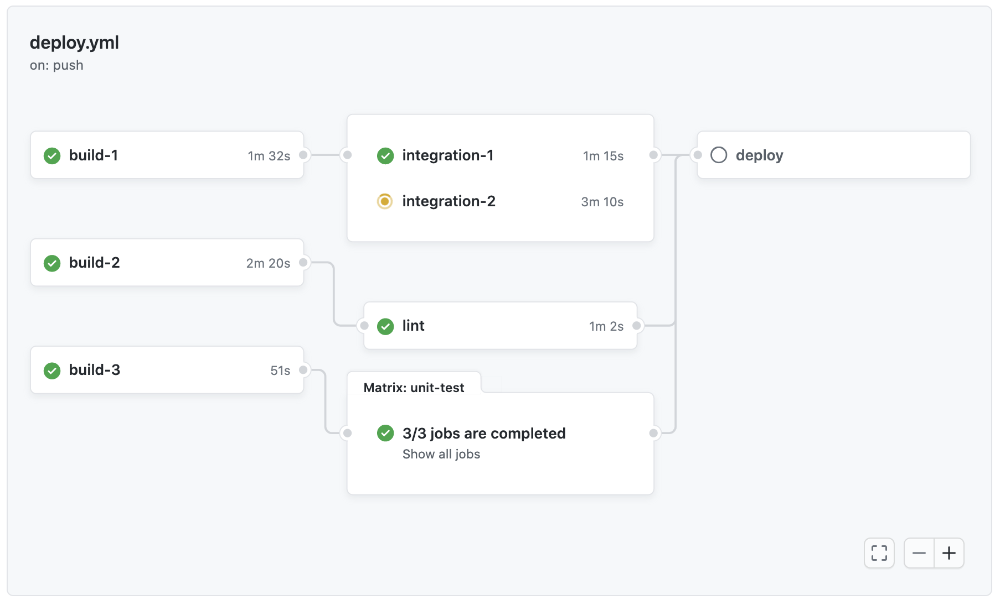
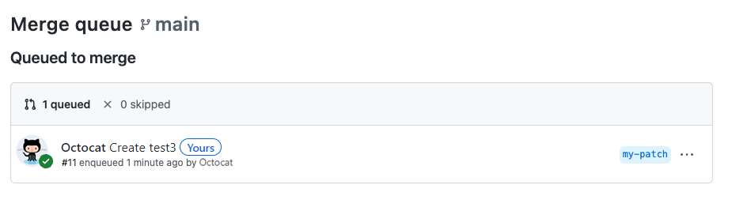

GitHub Actions and Merge Queues: How to Ship Faster Without Breaking `main`
A practical guide to pairing CI automation with merge queues for calmer, cleaner releases ⚙️
GitHub merge queues solve a common scaling problem: keeping a busy branch stable without forcing every pull request author to constantly rebase and retest. Combined with GitHub Actions and the `merge_group` event, teams can keep velocity high while protecting `main` from surprise breakage.

GitHub Actions and Merge Queues: How to Ship Faster Without Breaking main
On small teams, merging pull requests is usually simple: review, wait for checks, click merge, move on.
But as a codebase gets busier, that rhythm starts to crack. Two pull requests pass CI independently, then conflict in practice. A branch turns red right after merge. Developers rebase, rerun checks, and lose time babysitting main instead of shipping features.
That is exactly where GitHub merge queues become interesting. Paired with GitHub Actions, they turn merging into a controlled, testable flow instead of a race.
Key takeaways
Key Takeaways
- Merge queues help protect busy branches by testing queued pull requests together before they land, reducing “green PR, broken
main” moments. - They offer many of the same safety benefits as requiring branches to be up to date, without forcing every author to manually update and retest their branch before merging.
- To make GitHub Actions work correctly with merge queues, teams should listen for the
merge_groupevent, not justpull_request. - Merge queues are especially useful for teams with high PR volume, required status checks, and a protected
mainbranch.
Why merge queues matter
A merge queue is designed for a very specific bottleneck: multiple pull requests all trying to land safely in the same protected branch.
Without a queue, teams often choose between two painful options:
| Option | What you gain | What it costs |
|---|---|---|
| Require branches to stay up to date | Higher confidence before merge | Constant rebasing and repeated CI runs |
| Merge as soon as checks pass | Faster flow | More broken branches and surprise conflicts |
A merge queue gives you a better middle ground. GitHub creates temporary queue branches, combines a pull request with the latest base branch and any queued changes ahead of it, and then runs the required checks before merge. That means the system validates the real integration scenario, not just the PR in isolation.
In practice, that changes the emotional tone of delivery. Less queue-jumping. Less “who merged first?” drama. Less ceremony around keeping main green.
Where GitHub Actions fits in
This is where a lot of teams stumble.
If your CI only runs on pull_request, your checks may not run for the merge queue’s combined test branch. GitHub added the merge_group event specifically so required checks can run against the merge group that the queue creates.
A minimal workflow often looks like this:
name: ci
on:
pull_request:
branches: [main]
merge_group:
types: [checks_requested]
jobs:
test:
runs-on: ubuntu-latest
steps:
- uses: actions/checkout@v4
- name: Set up Node
uses: actions/setup-node@v4
with:
node-version: 20
- name: Install dependencies
run: npm ci
- name: Run tests
run: npm test
The important part is not the stack. It is the trigger.
If your required status checks must pass before a queued PR can merge, those checks need to be produced for the merge group too. Otherwise, the queue can stall or behave in ways that feel confusing to the team.
A good rule of thumb: if a check protects
main, it should probably run on bothpull_requestandmerge_group.
What changes for developers
The biggest win is not only technical. It is behavioral.
With merge queues in place:
- developers stop rebasing quite so obsessively
- reviewers spend less time policing branch freshness
- CI reflects the branch state that is about to exist, not the one that existed 20 minutes ago
- release managers get a calmer
main
That said, merge queues are not magic.
They work best when your pipeline is already reasonably disciplined:
- required checks are clearly defined
- branch protection is enabled
- flaky tests are under control
- CI duration is acceptable for a queue-based workflow
If your checks are unreliable, a merge queue can amplify frustration instead of reducing it. It will faithfully automate your process — including the messy parts.
When merge queues are worth it
You probably do not need a merge queue for a tiny repo with a few PRs per week.
You probably do need one when:
1. main is busy all day
The more frequently pull requests land, the more likely independently green changes will fail together.
2. Your team already protects the default branch
GitHub supports merge queue as part of branch protection or ruleset configuration, which makes it a natural next step once reviews and required checks are already in place.
3. CI is expensive enough that repeated rebases hurt
A merge queue shifts the cost from “every author manually updates and reruns everything” to “the system validates the merge order centrally.” That is often a better trade.
One subtle but important detail
When using merge queue, the merge method is controlled by the queue or its rules — not by each developer at merge time. That is a small detail, but it matters for teams that care about history shape and consistency.
This is part of the bigger theme: merge queues are less about adding a feature and more about standardizing the last mile of integration.
Conclusion
GitHub Actions answers the question, “Did this change pass our checks?”
Merge queues answer the harder one: “Will this change still pass when it lands in the real line of traffic?”
Used together, they make CI feel less like a gate and more like an air-traffic system — orderly, predictable, and built for teams moving in parallel.
For growing engineering teams, that is a meaningful shift. Not because it makes merging flashy, but because it makes merging boring.
And boring, in release engineering, is usually a very good sign.
Further Reading
- GitHub Docs — Managing a merge queue
- GitHub Docs — Events that trigger workflows (
merge_group) - GitHub Docs — Managing a branch protection rule
- GitHub Changelog — Merge group webhook event and GitHub Actions workflow trigger
How did this post make you feel?
Pick one reaction:

